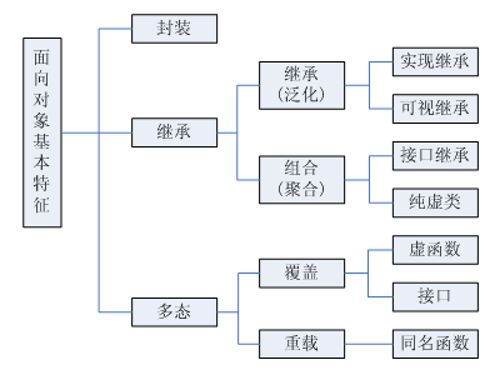

一、C#提供对面向对象编程（Object Oriented Programming）的完整支持；类描述对象的类型，而对象是类的具体实例，创建对象的过程也被称为实例化（Instantiation）；通常使用new运算符来创建对象：
new MyType();※其中()实际上代表的是调用类的默认构造函数来构建类的实例；
※C#还提供了类的轻量版本，称为结构，当需要创建大量对象但不希望因此占用太多内存时，可以使用结构；
※一般来说，类用于较复杂的行为或在对象创建后频繁修改值的数据结构，结构用于较简单的行为或在对象创建后较少修改值的数据结构；
1.定义（Define）一个命名为MyType的类或结构，那么MyType就是类型的名称，声明（Declare）MyType类型的变量myObj，初始化（Initialize）myObj变量为新创建的对象或其它同为MyType类型且不为空的变量，那么变量myObj就指向了MyType类型的一个对象：
MyType myObj = new MyType();二、面向对象编程的三大特性：封装，继承，多态，其中，类完整的支持这三大特性，结构则只支持封装，不支持继承和多态：

1.封装，是把客观事物封装成抽象的类，类可以把数据和行为只让可信的类或对象操作，对不可信的进行隐藏；封装是面向对象的特征之一，是类和对象概念的主要特性； 简单的说，一个类就是一个封装了数据以及操作这些数据的行为的逻辑实体，某些数据和行为可以是私有的，不能被外界访问，通过这种方式，对象对内部数据和行为提供了不同级别的保护，以防止程序中无关的部分意外的改变或错误的使用了对象的私有部分；
2.继承，是可以使用现有类的所有功能，并在无需重新编写原来的类的情况下对这些功能进行扩展的能力； 通过继承创建的类称为子类或派生类，被继承的类称为父类或基类；继承的过程，就是从一般到特殊的过程；要实现继承，可以通过继承和组合（Composition）来实现；继承概念的实现方式有两种：实现继承是指直接使用基类的方法而无需额外编码的能力；接口继承是指仅使用方法的名称，但是子类必须提供实现的能力；
3.多态，是允许将派生类对象赋值给其基类变量的技术，赋值之后，基类变量就可以根据当前赋值给它的派生类对象的类型以不同的方式运作；简单的说，就是允许将派生类类型的指针赋值给基类类型的指针；
三、面向对象设计的五大基本原则 ：S.O.L.I.D
1.单一职责原则（SRP，Single Responsibility Principle）：一个类应该有且只有一个去改变它的理由，这意味着一个类应该只有一项工作；
2.开放封闭原则（OCP，Open-Close Principle）：对象应该对扩展开放，对修改封闭，这就意味着一个类应该无需修改类本身但却容易扩展；
3. 里氏替换原则（LSP，Liskov Substitution Principle）：在对象x为类型T时q(x)成立，那么当S是T的派生类时，对象y为类型S时q(y)也应成立，即对基类的调用同样适用于派生类，每一个基类实例都应该可以替换成它们的派生类实例；
4.接口分离原则（ISP，Interface Segregation Principle）：不应强迫客户端实现一个它用不上的接口，或是说客户端不应该被迫依赖它们不使用的方法；
5.依赖反转原则（DIP，Dependency Inversion Principle）：对象必须依靠抽象而不是具体实现，它表示高层次的模块不应该依赖于低层次的模块，它们都应该依赖于抽象；
如果您觉得阅读本文对您有帮助，请点一下“推荐”按钮，您的认可是我写作的最大动力！
作者：Minotauros
出处：https://www.cnblogs.com/minotauros/
本文版权归作者和博客园共有，欢迎转载，但未经作者同意必须保留此段声明，且在文章页面明显位置给出原文连接，否则保留追究法律责任的权利。